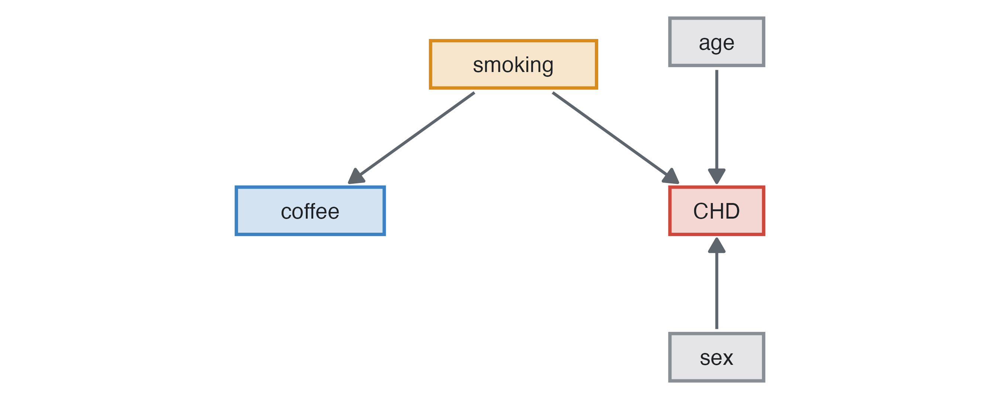
Teaching with studysim
Each exercise below names the scenario and options, then what the students should find. The tables are the answer key’s expected estimates (the average of large simulated studies), computed by the module itself when this page was built. True is the direct effect the data were generated with (every other variable fixed); where a variable also acts through others, the total effect follows, and Adjusted (DAG) adjusts each variable only for what it does not cause.
Confounding: coffee and coronary heart disease
Coronary heart disease incidence, cohort, measure age, sex, smoking and coffee. Coffee has no effect, but coffee drinkers smoke more: the crude hazard ratio of coffee is above 1 and disappears once smoking is in the model.
| Variable | Contrast | True | direct | total | Crude | Adjusted (all) | Adjusted (DAG) | Estimate |
|---|---|---|---|---|---|---|---|---|
| age | per 1 years | HR | 1.05 | 1.07 | 1.07 | 1.07 | 1.07 | HR |
| sex | male vs female | HR | 1.60 | 1.76 | 1.77 | 1.79 | 1.79 | HR |
| smoking | former vs never | HR | 1.20 | 1.21 | 1.21 | 1.20 | 1.21 | HR |
| smoking | current vs never | HR | 1.60 | 1.81 | 1.76 | 1.75 | 1.78 | HR |
| coffee | per 1 cups/day | HR | 1.00 | 1.00 | 1.08 | 1.01 | 1.01 | HR |
Exercise: leave smoking unmeasured and show that the adjusted coffee effect stays biased (residual confounding).
Confounding by indication: chemotherapy
Breast cancer prognosis, prognosis design. Chemotherapy truly lowers the hazard (HR 0.75), but it is given to younger women with more nodes and higher grade; its crude hazard ratio points the wrong way.
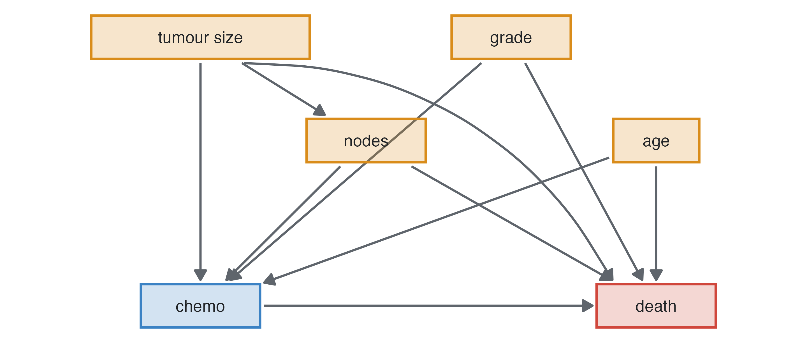
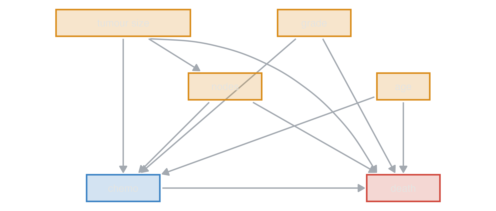
| Variable | Contrast | True | direct | total | Crude | Adjusted (all) | Adjusted (DAG) | Estimate |
|---|---|---|---|---|---|---|---|---|
| age | per 1 years | HR | 1.03 | 1.03 | 1.03 | 1.03 | 1.03 | HR |
| tumour_size | per 10 mm | HR | 1.15 | 1.19 | 1.16 | 1.14 | 1.16 | HR |
| nodes | per 1 | HR | 1.08 | 1.06 | 1.08 | 1.08 | 1.06 | HR |
| grade | G2 vs G1 | HR | 1.50 | 1.68 | 1.56 | 1.64 | 1.56 | HR |
| grade | G3 vs G1 | HR | 2.20 | 2.75 | 2.48 | 2.77 | 2.50 | HR |
| chemo | yes vs no | HR | 0.75 | 0.75 | 1.09 | 0.76 | 0.76 | HR |
Odds ratios from a case-control study
Breast cancer risk factors, case-control with two controls per case. The data are generated as a cohort with hazard ratios; the case-control odds ratios approach them because the disease is rare. Menopause is determined by age (a rule of the scenario), so much of its crude odds ratio is confounding by age. After adjustment it falls near 1, its direct effect. What remains above 1 is mediated: only post-menopausal women take hormone replacement therapy, which is not measured here, so menopause carries part of its effect (the total column). BMI’s effect, which differs before and after menopause, is centred at the population’s mean BMI, where menopause has no effect of its own.
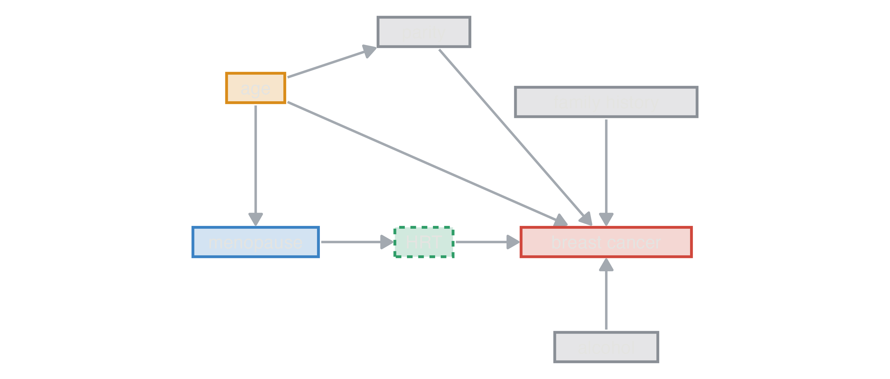
| Variable | Contrast | True | direct | total | Crude | Adjusted (all) | Adjusted (DAG) | Estimate |
|---|---|---|---|---|---|---|---|---|
| age | per 1 years | HR | 1.04 | 1.05 | 1.04 | 1.04 | 1.04 | OR |
| menopause | post vs pre | HR | 1.00 | 1.18 | 2.33 | 1.08 | 1.08 | OR |
| parity | per 1 births | HR | 0.93 | 0.93 | 1.02 | 0.94 | 0.94 | OR |
| family_hist | yes vs no | HR | 1.80 | 1.80 | 1.73 | 1.72 | 1.72 | OR |
| alcohol | per 10 g/day | HR | 1.07 | 1.07 | 1.08 | 1.08 | 1.08 | OR |
Exercise: compare with Matched case-control on age, analysed with conditional logistic regression.
Effect modification
In the same scenario BMI protects before menopause and raises risk after it. A model without the interaction gives a single, misleading BMI effect; students should fit bmi × menopause. The answer key shows the true effect per level of menopause in its note. Effect modification and interaction explains how to read the model’s coefficients, why centring BMI changes the “effect of menopause”, why the answer depends on the scale, and shows a modifier that reverses an effect (Dexamethasone in hospitalised COVID-19).
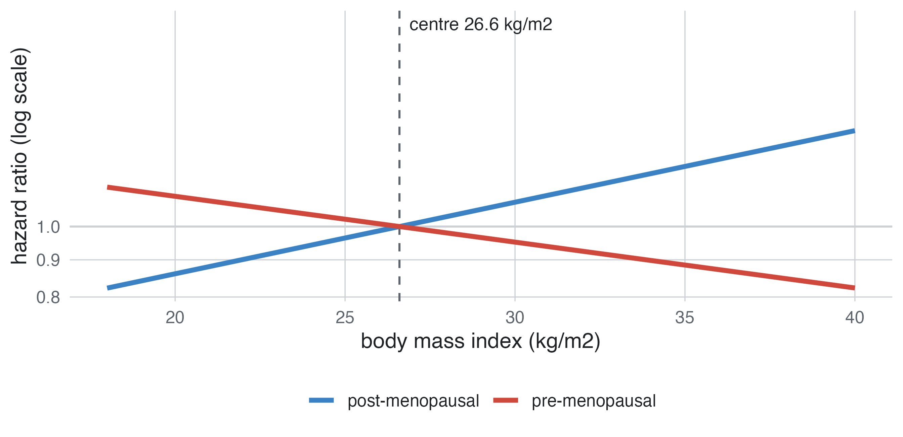
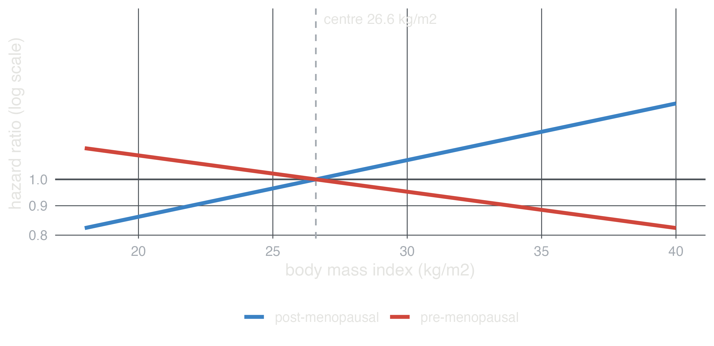
Adjusting for everything: the Table 2 fallacy
Coronary heart disease incidence, cohort, all variables measured. Age, sex and education act partly through blood pressure, cholesterol, BMI, diabetes and HDL. A model with every variable gives their direct effects: education seems to do nothing, and the effect of sex shrinks. Adjusting each exposure only for its confounders (Adjusted (DAG)) gives the total effect, the one that answers “what if this changed?”. A single mutually adjusted table (the “Table 2” of many papers) mixes both kinds.
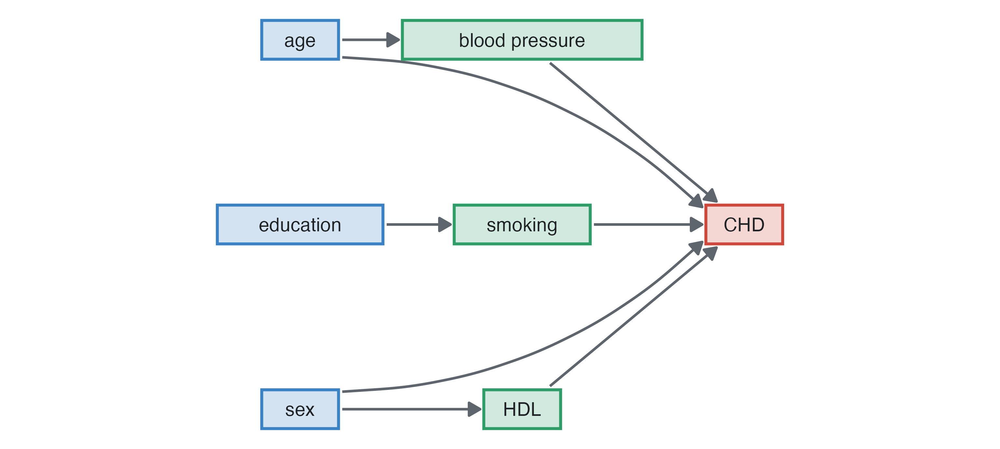
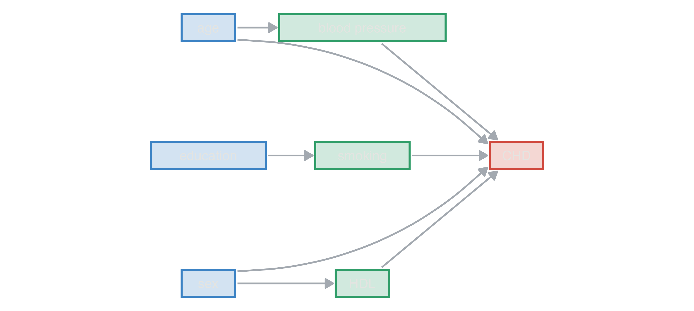
| Variable | Contrast | True | direct | total | Crude | Adjusted (all) | Adjusted (DAG) | Estimate |
|---|---|---|---|---|---|---|---|---|
| age | per 1 years | HR | 1.05 | 1.07 | 1.07 | 1.05 | 1.07 | HR |
| sex | male vs female | HR | 1.60 | 1.76 | 1.77 | 1.61 | 1.81 | HR |
| education | secondary vs primary | HR | 1.00 | 0.94 | 0.90 | 0.96 | 0.90 | HR |
| education | university vs primary | HR | 1.00 | 0.90 | 0.89 | 1.01 | 0.88 | HR |
| total_chol | per 1 mmol/L | HR | 1.20 | 1.20 | 1.31 | 1.20 | 1.20 | HR |
| smoking | former vs never | HR | 1.20 | 1.21 | 1.21 | 1.20 | 1.20 | HR |
| smoking | current vs never | HR | 1.60 | 1.81 | 1.76 | 1.60 | 1.79 | HR |
| physical_activity | per 1 MET-h/week | HR | 1.00 | 0.99 | 0.99 | 1.00 | 0.99 | HR |
| cigarettes | per 1 cigarettes/day | HR | 1.01 | 1.01 | 1.02 | 1.01 | 1.01 | HR |
| coffee | per 1 cups/day | HR | 1.00 | 1.00 | 1.08 | 1.01 | 1.01 | HR |
| bmi | per 1 kg/m2 | HR | 1.02 | 1.06 | 1.07 | 1.02 | 1.06 | HR |
| sbp | per 10 mmHg | HR | 1.18 | 1.18 | 1.34 | 1.17 | 1.17 | HR |
| hdl | per 1 mmol/L | HR | 0.60 | 0.60 | 0.41 | 0.60 | 0.60 | HR |
| diabetes | yes vs no | HR | 1.80 | 1.80 | 2.94 | 1.88 | 1.88 | HR |
Trials: absolute effects and non-collapsibility
Rectal indomethacin to prevent post-ERCP pancreatitis, randomised trial. The key gives the risk in each arm, the risk difference and the number needed to treat. The odds ratio of the 2×2 table (the marginal one) is closer to 1 than the conditional odds ratio the data were generated with, although randomisation leaves no confounding: adjusting for prognostic variables moves it towards the conditional one.
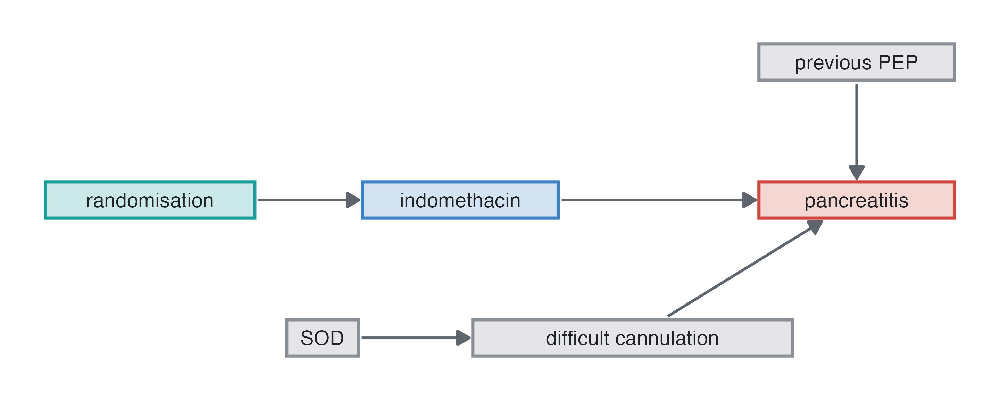
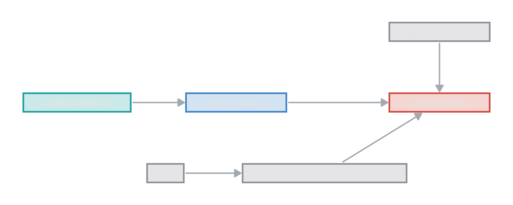
| Value | |
|---|---|
| Risk: placebo | 0.1700 |
| Risk: indomethacin | 0.0896 |
| Risk difference, indomethacin vs placebo | -0.0806 |
| Number needed to treat for one event fewer, indomethacin vs placebo | 12.4000 |
| Risk ratio, indomethacin vs placebo | 0.5260 |
| Odds ratio, marginal (population), indomethacin vs placebo | 0.4800 |
| Odds ratio, conditional (true model), indomethacin vs placebo | 0.4700 |
Biases on purpose
The Biases section of the panel builds a bias into the study; the answer key’s large study carries the same bias, so it shows what the biased design estimates next to the truth. Recall bias, controls selected by exposure and the collider act on the variables ticked in the Exposure column.
| bias | design | what students should see |
|---|---|---|
| Recall bias | case-control | unexposed cases report the exposure: its odds ratio inflated |
| Controls selected by exposure | case-control | hospital controls with more exposure: its odds ratio towards 1 |
Collider (admitted) |
cross-sectional, cohort, case-control | adjusting for a variable caused by the outcome and the exposure distorts the exposure’s effect |
| Non-adherence | randomised trial | intention to treat dilutes the effect; as treated and per protocol are confounded by prognosis |
| Informative loss to follow-up | followed designs | Kaplan-Meier underestimates the risk; hazard ratios shift |
| Immortal time | cohort, prognosis | a useless treatment started during follow-up looks protective when analysed at baseline |
| Spectrum, partial verification | diagnostic | sensitivity and AUC too high with severe cases; with only some negatives verified, sensitivity too high and specificity too low |
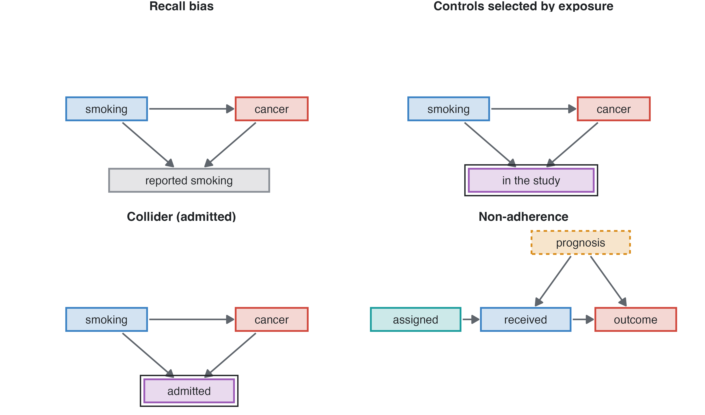
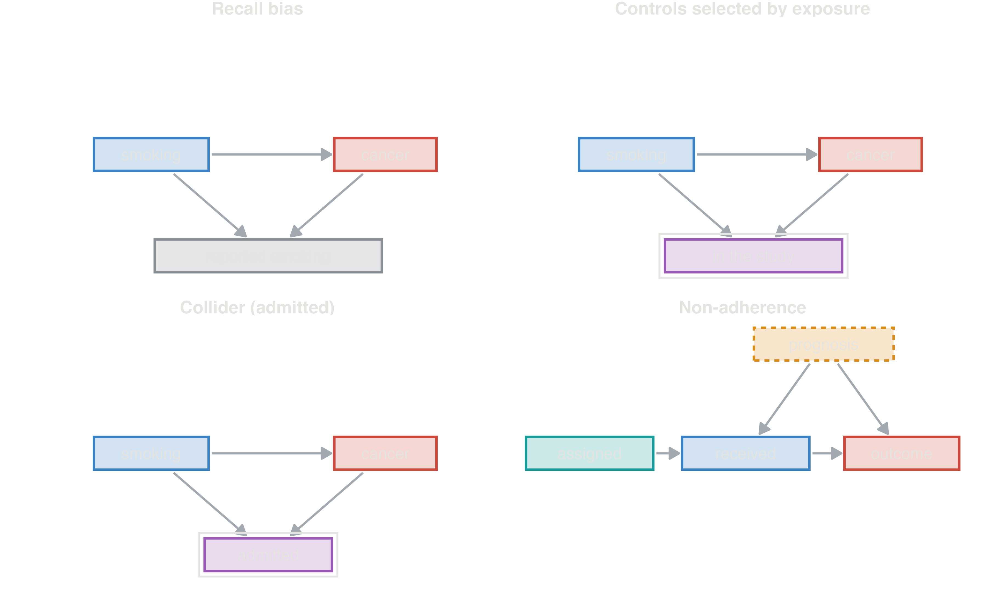
| Variable | Contrast | True | direct | total | Crude | Adjusted (all) | Adjusted (DAG) | Estimate |
|---|---|---|---|---|---|---|---|---|
| age | per 1 years | HR | 1.09 | 1.09 | 1.09 | 1.09 | 1.09 | OR |
| sex | male vs female | HR | 1.20 | 2.46 | 2.70 | 1.21 | 2.72 | OR |
| smoking | former vs never | HR | 4.00 | 4.00 | 7.87 | 7.66 | 7.66 | OR |
| smoking | 1-14 vs never | HR | 7.70 | 7.70 | 12.01 | 11.43 | 11.43 | OR |
| smoking | 15-24 vs never | HR | 13.70 | 13.70 | 21.87 | 20.19 | 20.19 | OR |
| smoking | 25+ vs never | HR | 24.50 | 24.50 | 41.97 | 37.87 | 37.87 | OR |
Recall bias of 30% on smoking (lung cancer, case-control): every smoking odds ratio is inflated.
Chance and bias: replicate studies
Compare designs with 200 replicate studies per design: the spread of the estimates is the standard error a single study only estimates; a confidence interval should contain the true value in about 95% of the studies, and power is the share of studies that find the effect. A biased design shows a shifted distribution and poor coverage, however many studies are drawn.
Categorising a continuous variable
Systolic pressure in quartiles (Form: quartiles) gives a dose-response pattern but loses information: compare the precision of the per-10-mmHg estimate with the quartile contrasts, and the effect of choosing other cut points.
| Variable | Contrast | True | direct | total | Crude | Adjusted (all) | Adjusted (DAG) | Estimate |
|---|---|---|---|---|---|---|---|---|
| age | per 1 years | HR | 1.05 | 1.07 | 1.07 | 1.06 | 1.07 | HR |
| sex | male vs female | HR | 1.60 | 1.76 | 1.77 | 1.79 | 1.79 | HR |
| sbp | Q2 vs Q1 | HR | NA | NA | 1.58 | 1.32 | 1.32 | HR |
| sbp | Q3 vs Q1 | HR | NA | NA | 2.30 | 1.67 | 1.67 | HR |
| sbp | Q4 vs Q1 | HR | NA | NA | 3.74 | 2.30 | 2.30 | HR |
Trials: parallel and crossover
Antihypertensive drug vs placebo: in the parallel trial the unadjusted difference is unbiased, and adjusting for baseline pressure (ANCOVA) narrows the interval. In the 2×2 crossover each patient is their own control: 30 patients give a precise estimate, and the period effect must be in the model.
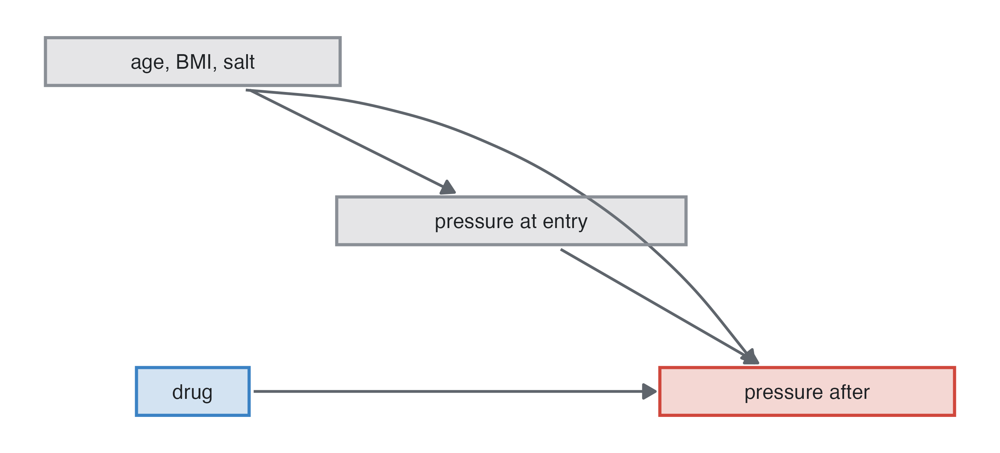
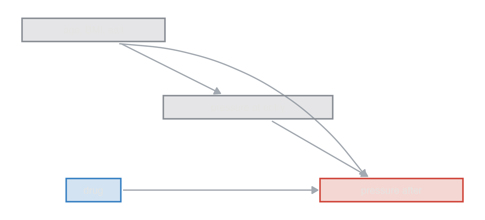
| Variable | Contrast | True | direct | Crude | Adjusted (all) | Estimate |
|---|---|---|---|---|---|---|
| drug | amlodipine vs placebo | beta | -9 | -8.99 | -8.97 | beta |
| Variable | Contrast | True | direct | Crude | Adjusted (all) | Estimate |
|---|---|---|---|---|---|---|
| drug | amlodipine vs placebo | beta | -9 | -8.92 | -8.92 | beta |
Bioequivalence of two formulations: AUC and Cmax are log-normal; analyse log values and back-transform to a geometric mean ratio, then check whether its 90% CI lies within 0.80–1.25.
Assignments with student keys
Give every student the same options and their own student key (e.g. their ID): each gets a different dataset from the same superpopulation. The teacher reproduces any of them by typing the key, and the answer key is the same for all.
Export class (Output) does it in one go: type the student keys (separated by commas) and it saves a zip with one CSV and one codebook per student, a register of keys and seeds, and one answer key report. Students then get only their data.
A teacher code keeps the key out of the students’ panel: typed in Library before exporting a library, it locks that library; while it is loaded, the answer key, its report, the class export, the effect sizes on the diagram, the true values of Compare designs and the effects in Library need the code. It is a deterrent, not protection: the library file itself holds the parameters. The causal diagram is shown without effect sizes by default.